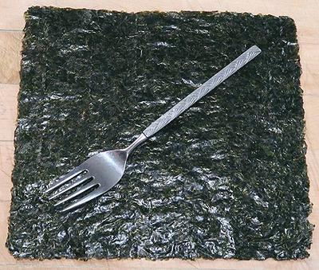
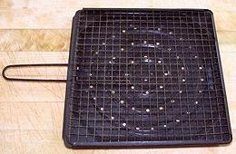

Nori / Gim / Kim

[Nori (Japan); Gim, Kim (Korea); Rong bien (Viet); Zicai (China); Laver
(Europe); Porphyra yezoensis and P. tenera, sometimes other
species]
These Red Algae are farmed intensively in Japan, Korea and China. Live,
they look just like Laverbread.
Once harvested, Nori is shredded and made up into paper-like sheets very
much the way handmade paper is made. These sheets are lightly toasted which
turns them green. They are used as a wrapping for sushi, as a garnish, as
a flavoring in soups, and seasoned for use as snacks. These sheets are
extremely important in the cuisines of Korea and Japan.
The paper form was invented in about 1750. Previous to that, Nori was
boiled into a paste, as Laverbread still is in the British Isles. These
seaweeds are notable in that their fronds are only 1 cell thick. Red Algae
is high in protein, iron and iodine as well as containing significant amounts
of vitamins B2, A, D and C.
More on Algae.

Prep:
Many recipes ask you to toast the Nori before use. They
often say to hold a sheet with tongs, a few inches from a gas flame, turning it
often until it becomes aromatic and starts to shrink a little. I find it far
more convenient to use a Japanese Toasting
Pan. It is done nice and evenly in only a few seconds.
Buying & Storing:
These seaweed sheets
are so important they can be found in just about any East or Southeast Asian
market, and in the Asia section of many regular supermarkets. Keep them in
a tightly sealed package (include the desiccant they were packed with) in a
dry place away from heat and light, and they'll last a year or so.
Health & Nutrition:
Nori contains amphipod allergens that
can cause serious allergic reactions in people highly allergic to crustaceans,
such as shrimp. It also contains toxic metals, arsenic and cadmium, but
given typical Nori consumption, this is not a problem. Nori contains
significant amounts of iodine and lesser amounts of iron and zinc. It has
been claimed as a vegetarian source of Vitamin B12, but this depends on
the amount of Amphipod contamination. Sorry, Vegans, Amphipods are animals,
not plants - this product harms animals.
al_noriz 201221 - www.clovegarden.com
©Andrew Grygus - agryg@clovegarden.com - Photos
on this page not otherwise credited © cg1
- Linking to and non-commercial use of this page permitted